Installation guide via TGP
This guide assumes that you have already set up a QQ account.
Go Here and download TGP (Click the big blue button).
Go Here and download the latest Locale-Emulator. 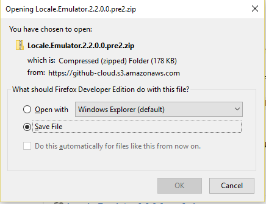
Extract the Locale-Emulator program with your favorite file extractor. (I use 7-zip because it's free.)
Run the LEGUI.exe program to make your locale chinese. Select the settings below and click "Save".
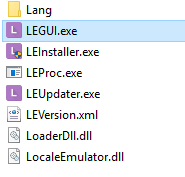 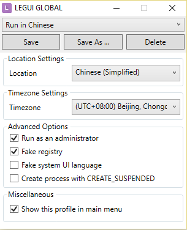
Click "Install/Upgrade" if it warns you about japanese things ignore and click install on the next screen too.
Right click the tgpminiloader file you downloaded earlier and select "Run in Chinese".
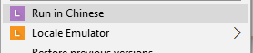
When it opens click the bottom right button.
Put an install location in, or leave the current one if you so fancy, unselect the two check marks, and click the bottom right button here too. After that press the blue button in the middle.
Wait for it to install...
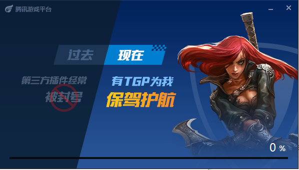 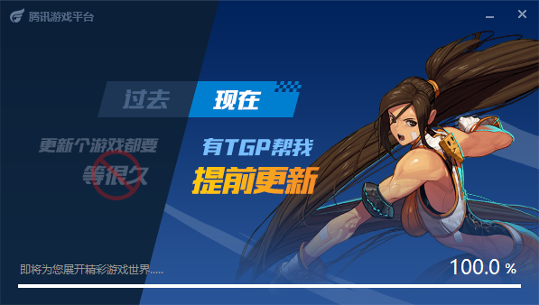
Click the big green button.
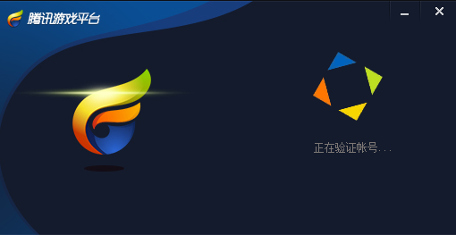
Click next a bunch of times.
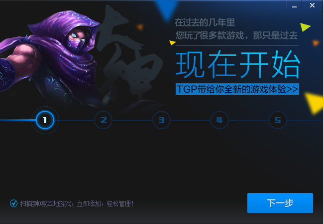
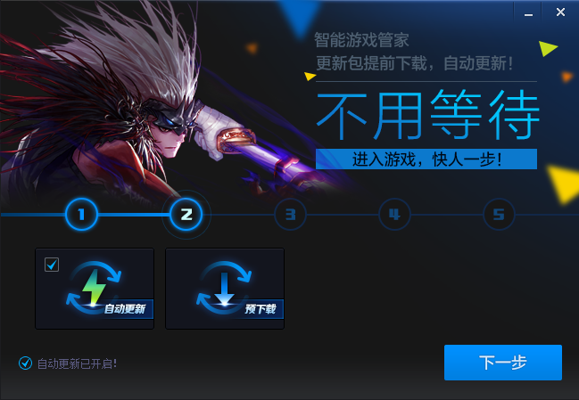
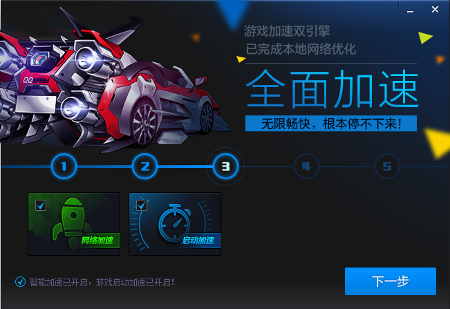
Click Finish!
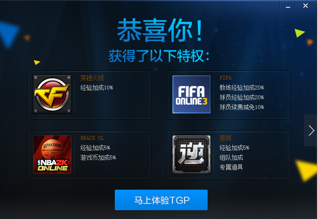
Log in to your account and click the second option in the TGP window.
Click the third tab down and then on MHO.
Another damn green button.
Wait for download to finish. This will be way faster than using the old method which we won't talk about.
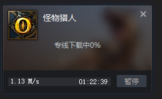
Once downloaded it will install in the background. You will hear the wonderful Monster Hunter theme music in the background while it does this...
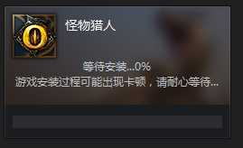
When the Youku bs comes up close out by the x at the top then go to your taskbar, right click it and click the bottom button.
Uninstall that shit. (Unless you are into Chinese things. Like that.)
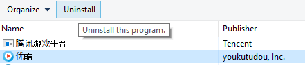
At the same time you were uninstalling Youku this little popup probably happened. this means it was installed and you can run the game!
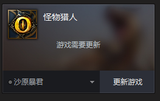
If you installed it during maintenance you will see this:
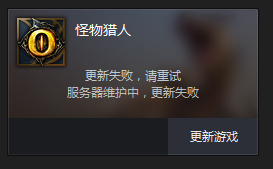
The game will update if it is not in maintenance. If another popup happens when you press the button, this is TGP asking if you would like to authorize TGP to keep Monster Hunter Online updated. Click the left button which will be Yes!